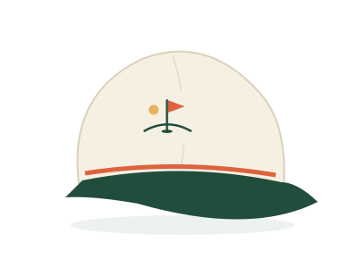
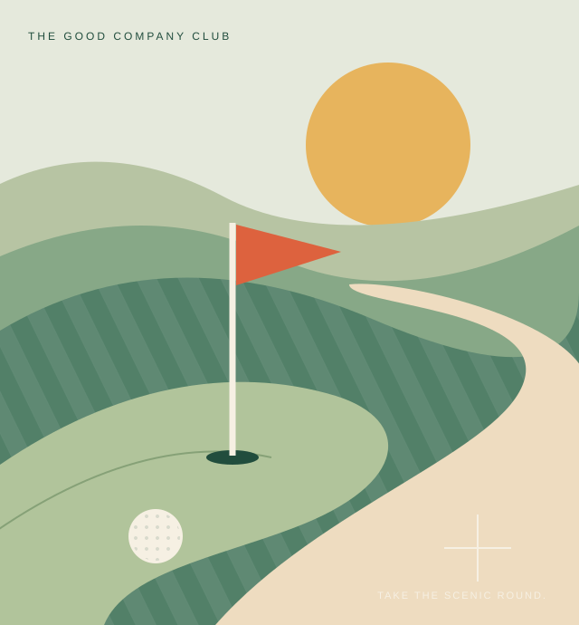
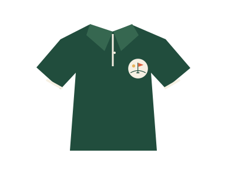
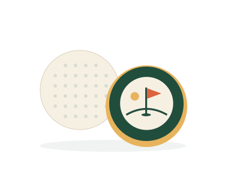

DESIGN CONCEPT / 01

The Sunday rope hat
THE EVERY-ROUND ONEA clean flag mark. A little color. No membership required.

The shots. The stories. The people you would play another round with. Golf and good conversation, with a little something in the glass.
A Sunday state of mind. Any day of the week.

A round on the course. A conversation in the studio. The moments worth bringing back to the table.
The Sunday Pours format pairs stories from a round of golf with an in-studio conversation. Each tasting chapter connects to a few holes—and everything that happened between them.
No swing lecture. No whiskey exam. Just personalities, unexpected moments, and a seat at the table.
The opening shots, first impressions, and the stories that tell you who you are spending the round with.
A little friendly competition. A decision worth debating. The conversations that happen once everyone settles in.
The shot nobody will let you forget, the story you did not expect, and a reason to do it all again.
Easygoing essentials for the course and wherever the day goes next. A first look at the Sunday Pours collection.

A clean flag mark. A little color. No membership required.

A relaxed clubhouse look, without the clubhouse attitude.

Golf balls and a signature marker. Small reminders of a good day.
Concept previews, not products currently for sale. Final designs, availability and prices will be announced.
Serious about enjoying the day. Not too serious about ourselves. Bring your stories. Your drink of choice. There is room at the table.
Golf is where we start. The people, places and conversations are what keep us coming back.
Memorable rounds, interesting places, and the moments that never make it onto a scorecard.
Good guests, great stories, and selected pours. Enjoy the conversation whether you drink or not.
Travel, local flavor, and a little discovery along the way. The best part of the day may be the detour.
Meet the MIXX TANK world behind Sunday Pours.